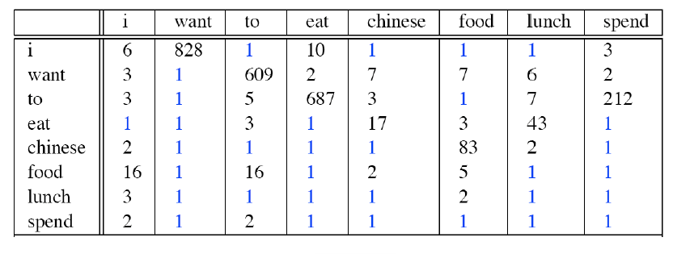

(二)N-gram模型
本文最后更新于：6 months ago
N-gram语言模型
语言模型：简单来说就是用于判断一个句子是否通顺，我们的目标是要给一个句子赋予一个概率。
//机器翻译
P(high winds tonite) > P(large winds tonite)
//正确拼写
P(about fifteen minutes from) > P(about fifteen minuets from)
//语言识别
P(I saw a van) >> P(eyes awe of an)可以提炼成两个问题：
- 最终问题：计算一个句子或一系列单词的概率$P(W)=P(w_1,w_2,w_3,w_4…w_n)$
- 相关问题：预测下一个单词出现的概率$P(w_n | w_1,w_2,w_3…w_n-1)$
将概率最大的作为预测结果返回。再比如机器翻译中，‘I like Tom so much.’ ===>{‘我’，‘喜欢’，‘汤姆’，‘非常’} 将这个集合里的字词排列组合成句子，然后用语言模型去计算形成句子的概率大小。概率越大，说明翻译越顺畅，越好，就作为最终的答案返回。

Markov Assumption
我们一般不会这样判断：
$P(the|its\ water\ is\ so\ transparent\ that)=\frac{Count(its\ water\ is\ so\ transparent\ that\ the)}{Count(its\ water\ is\ so\ transparent\ that)}$
因为涉及到太多可能的句子了。
直接这么计算，是有很大困难的，我们可以将其简化为求：
$P(the|its\ water\ is\ so\ transparent\ that)∪P(the|that)$
或者：
$P(the|its\ water\ is\ so\ transparent\ that)∪P(the|transparent\ that)$
这里引入的就是马尔科夫假设，即：一个item的出现概率，只与其前m个items有关，当m=0时，就是unigram，m=1时，是bigram模型。
$P(w1w_2w_3…w_n)=\prod{i=1}^{n}P(wi|w_1w_2w_3…w{i-1})$
- unigram模型：$P(w1w_2w_3…w_n)=\prod{i=1}^{n}P(w_i)$
- bigram模型：$P(wi|w_1w_2w_3…w{n-1})\approx P(wi|w{i-1})$
局限性：比如说，两个词语有长距离依赖关系时，起不了作用。
计算流程
数出现的频数——>建表——>计算某个句子的概率

由于句子可能会很长，这个概率就会变得非常小，可能会出现下界(underflow)的问题。所以可以修改直接相乘为log相加：$log(p_1·p_2·p_3·p_4)=logp_1+logp_2+logp_3+logp_4$
两个工具包：
http://www.speech.sri.com/projects/srilm/
https://kheafield.com/code/kenlm/
效果评估
一般方法是：
1. 在训练集(training set)中训练我们的模型参数
2. 使用区别于训练集的数据集作为测试集(test set)
3. 评估指标告诉我们模型在测试集上的表现如何
比较两个模型A和B的最佳评估方法是：
1. 将每个模型放入一个任务中——拼写校正器、语音识别器、机器翻译系统
2. 运行任务，获得A和B的精度，包括
o 正确纠正了多少拼写错误的单词
o 有多少单词翻译正确
3. 比较A和B的精确度Shannon Game：香农游戏。即给出前面n个单词，猜出第n+1个单词。
困惑度（Perplexity）。PPL是用在自然语言处理领域（NLP）中，衡量语言模型好坏的指标。

Generalization and Zeros
如果出现从未见到过的单词，就可能出现0除的情况，困惑度无法计算。所以我们引入Laplace Smoothing。
每个部分减去一点点，分给所有没有出现过的情况。或者称为加1法（在出现次数表里，设置所有的初始值为1）。

参考资料
[1] https://www.jianshu.com/p/e91f061d6d91
[2] 权小军 nlp课程
本博客所有文章除特别声明外，均采用 CC BY-SA 4.0 协议 ，转载请注明出处！